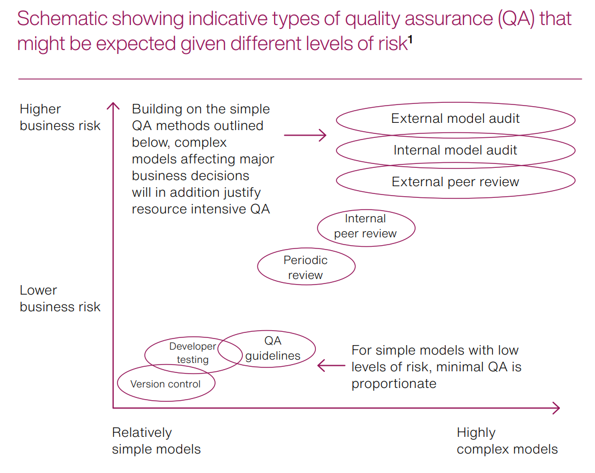

Make QA work for you
2025-11-13
Quality code ≠ Quality assured code

github.com/orgs/The-Strategy-Unit/projects
“Creating and maintaining a strong culture of quality assurance is vital for ensuring analysis is robust and of a high quality.”
QA is about building trust, not ticking boxes 🛡️
Embed QA where you work 💻
Make QA a habit, not a chore 🔄